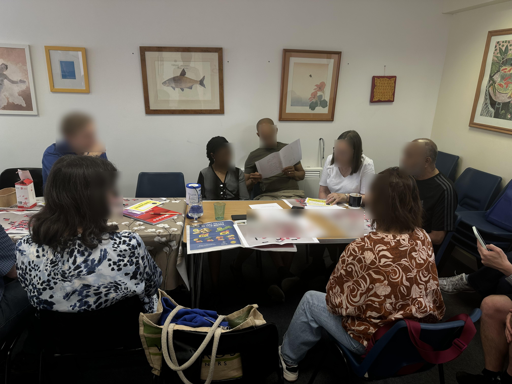
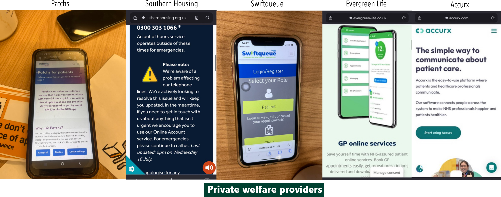
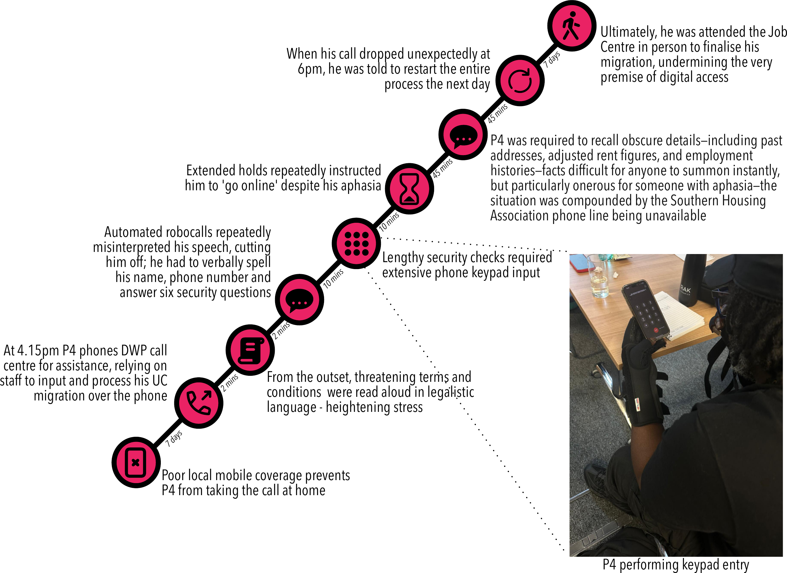
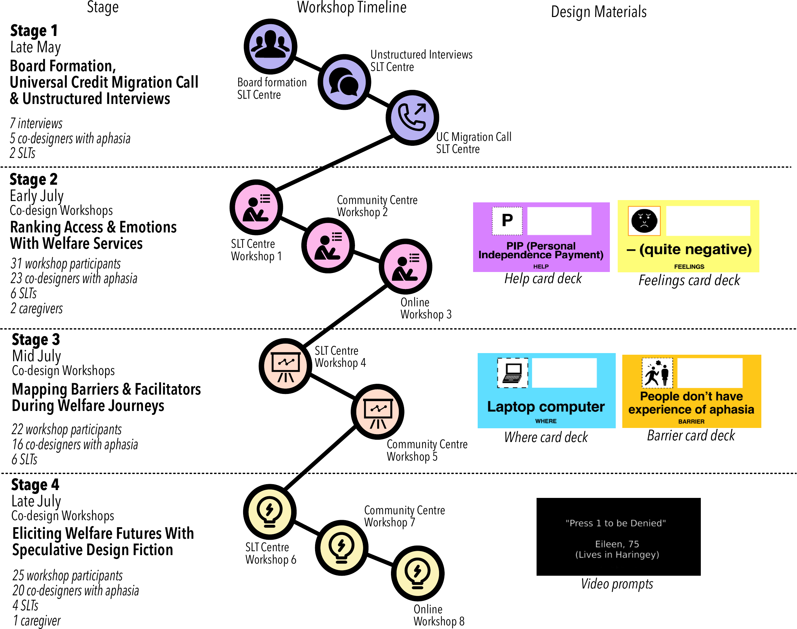
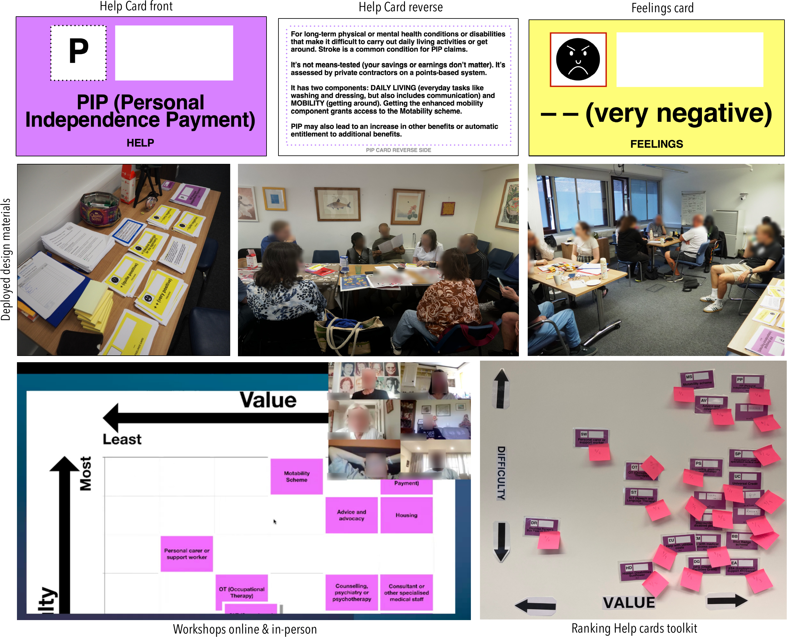
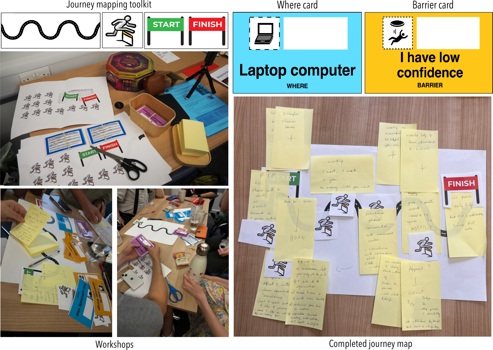
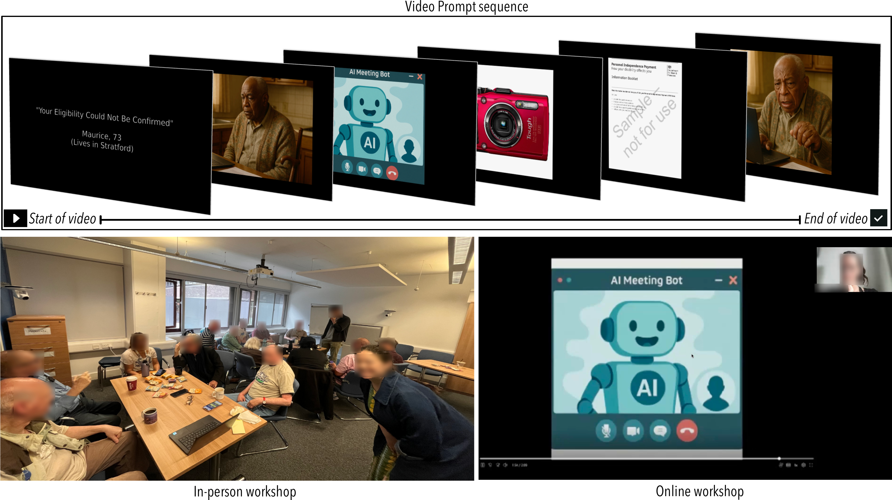
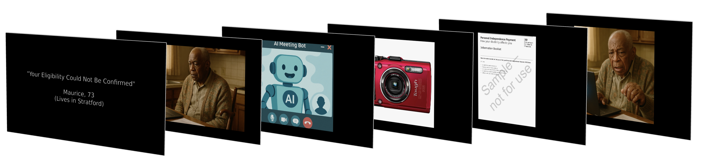
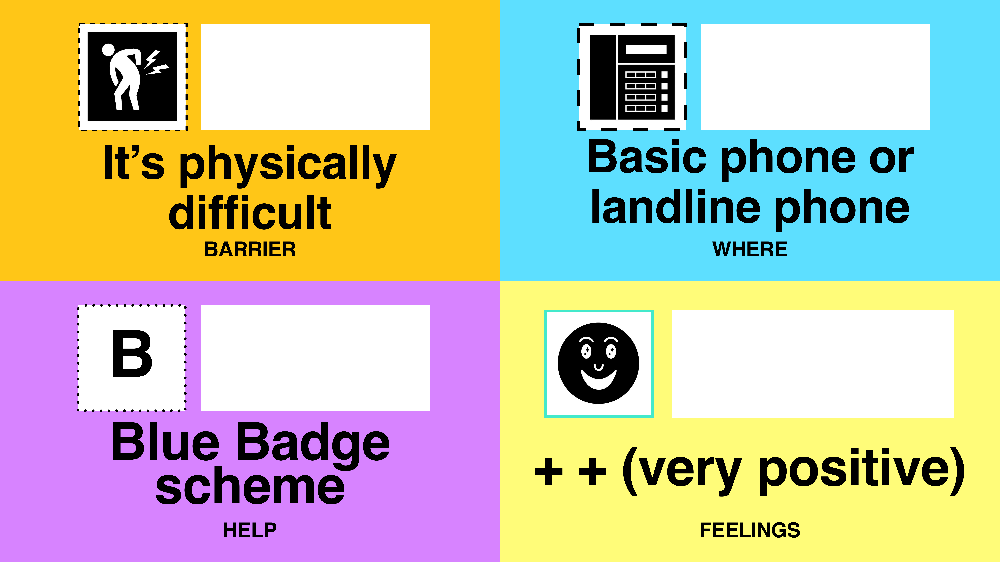

Advokit
People with aphasia are routinely excluded from the digital welfare systems they depend on. Benefits portals, housing applications, healthcare booking systems, GP apps — these services assume a level of literacy, digital fluency and communicative competence that many stroke survivors simply do not have. The consequences are severe: lost entitlements, failed appeals, financial hardship, and the emotional cost of navigating hostile bureaucracy without adequate support.

This is not an abstract problem. One co-designer — P4, living with aphasia — attempted to migrate his Universal Credit claim by phone. The call began with automated robocalls that repeatedly misinterpreted his speech, requiring him to verbally spell his name, phone number and answer six security questions. He was placed on extended hold and instructed to "go online" despite his aphasia. When his call dropped unexpectedly at 6pm, he was told to restart the entire process the next day. He ultimately had to attend the Job Centre in person — undermining the very premise of digital access.

Advokit is a response to this — a generative AI-enhanced digital toolkit co-designed with stroke survivors with aphasia, speech and language therapists and welfare advisors at Aphasia Re-Connect. The study ran across four stages from late May to late July 2025, involving 8 workshops, 7 interviews and over 60 participants across SLT centres, community venues and online.


Stage 2 workshops used accessible card decks — Help cards explaining benefit types in plain language, Where cards listing access channels, Barrier cards naming common obstacles, and Feelings cards — to help co-designers rank and articulate their experiences of welfare services. The resulting value/difficulty grids surfaced what mattered most: being understood, getting help quickly, not having to repeat yourself.

Stage 3 used journey mapping toolkits — a squiggly-line format representing the emotional arc of a welfare journey — to trace the specific moments where things went wrong. Co-designers physically placed Where and Barrier cards along the map, annotating with their own words. The resulting maps were dense with compound failures: inaccessible forms, phone queues, confusing letters, staff who didn't know about aphasia.

Stage 4 used speculative design fiction: short video prompts depicting near-future AI welfare scenarios — an automated eligibility denial, an AI meeting bot, a document camera, an inaccessible medical form — to ground discussion in vivid possibility rather than abstract hypotheticals. Co-designers responded with their own visions for what empathetic, accessible AI welfare services could look like.


Advokit translates these findings into a live toolkit — tools for benefit story generation, community knowledge sharing and plain-language assistance, built on a schema-driven agentic pipeline that ensures outputs meet strict accessibility and safety requirements. The design process is documented in two peer-reviewed papers presented at CHI 2026 and submitted to ASSETS 2026.
Open-Source Workshop Toolkit
A core contribution of Advokit is a fully open-source co-design toolkit that enables others to run their own workshops with disabled communities on digital welfare access. It includes accessible card decks, printable facilitation materials and five speculative design fiction video prompts. Download and use freely.
